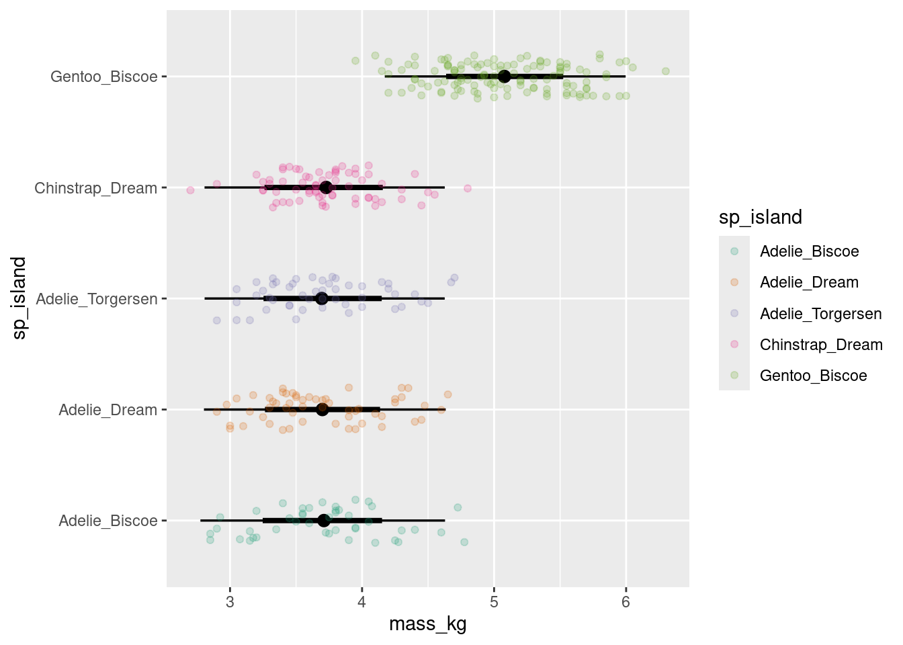

A newer version of CmdStan is available. See ?install_cmdstan() to install it.
To disable this check set option or environment variable CMDSTANR_NO_VER_CHECK=TRUE.
library(tidybayes)library(palmerpenguins)
Gaussian random intercepts: Penguin body mass
The Palmer penguins are found on three different islands. Let’s look at the distribution of body mass of each species on each island.
Plot the data
penguin_mass_island <- penguins |>select(species, island, body_mass_g) |>drop_na(body_mass_g) |>unite(sp_island, species, island) |>## center mass and change the unitsmutate(mass_kg = (body_mass_g)/1000)
Chain 1 Informational Message: The current Metropolis proposal is about to be rejected because of the following issue:
Chain 1 Exception: normal_lpdf: Scale parameter is 0, but must be positive! (in '/var/folders/x7/l08zn2396g797m5ws54np_6w0000gp/T/Rtmpw7jYom/model-daeddb7e5b3.stan', line 13, column 2 to column 47)
Chain 1 If this warning occurs sporadically, such as for highly constrained variable types like covariance matrices, then the sampler is fine,
Chain 1 but if this warning occurs often then your model may be either severely ill-conditioned or misspecified.
Chain 1
Chain 4 Informational Message: The current Metropolis proposal is about to be rejected because of the following issue:
Chain 4 Exception: normal_lpdf: Scale parameter is 0, but must be positive! (in '/var/folders/x7/l08zn2396g797m5ws54np_6w0000gp/T/Rtmpw7jYom/model-daeddb7e5b3.stan', line 13, column 2 to column 47)
Chain 4 If this warning occurs sporadically, such as for highly constrained variable types like covariance matrices, then the sampler is fine,
Chain 4 but if this warning occurs often then your model may be either severely ill-conditioned or misspecified.
Chain 4
Chain 1 finished in 1.7 seconds.
Chain 2 finished in 1.8 seconds.
Chain 3 finished in 1.8 seconds.
Chain 4 finished in 1.7 seconds.
All 4 chains finished successfully.
Mean chain execution time: 1.8 seconds.
Total execution time: 2.0 seconds.
Warning: Using the `size` aesthetic with geom_segment was deprecated in ggplot2 3.4.0.
ℹ Please use the `linewidth` aesthetic instead.

Source Code
---title: "Models with one level of hierarchy"description: | Some of these things are somewhat like the others.execute: freeze: truecomments: hypothesis: trueformat: html: code-tools: true---:::{.callout-tip}## Bayesian workflow1. Visualize your data2. Decide on your model structure3. Simulate from the model to understand it4. Fit the model to the data5. Plot model predictions to evaluate the fit / draw conclusions:::Today's goal is to look at a couple of different model structures that we saw yesterday. ```{r}library(tidyverse)library(cmdstanr)library(tidybayes)library(palmerpenguins)```## Gaussian random intercepts: Penguin body massThe Palmer penguins are found on three different islands. Let's look at the distribution of body mass of each species on each island.### Plot the data```{r gauss-inter-setup}penguin_mass_island <- penguins |>select(species, island, body_mass_g) |>drop_na(body_mass_g) |>unite(sp_island, species, island) |>## center mass and change the unitsmutate(mass_kg = (body_mass_g)/1000)``````{r gauss-inter-plot}penguin_mass_island |>ggplot(aes(y = sp_island,x = mass_kg,colour = sp_island)) +geom_jitter(alpha =0.8, height =0.1, width =0) +scale_color_brewer(palette ="Dark2")```Are the sample sizes equal among the species-island combinations?```{r}penguin_mass_island |>count(sp_island) |> knitr::kable()```### Decide on a model structureWe'll begin by fitting a model that assumes that body size for each of these five groups is completely independent:$$\begin{align}\text{Body mass}_i &\sim \text{Normal}(\mu_i, \sigma_{\text{obs}}) \\\mu_i &= \bar\beta + \beta_{\text{species}[i]} \\\bar\beta &\sim \text{Normal}(5, 2) \\\beta_{\text{species}} &\sim \text{Normal}(0, 1) \\\sigma &\sim \text{Exponential}(.5)\end{align}$$### Simulate to understand this modelHere's a little trick to get group indexes (numbers) from a character vector:```{r}group_names <-unique(penguin_mass_island$sp_island)group_numbers <-seq_along(group_names)names(group_numbers) <- group_namesgroup_numbers``````{r}penguin_groupid <- penguin_mass_island |>mutate(group_id = group_numbers[sp_island])penguin_groupid```As you can see, we're set up now with the names and the indexes we need. Now we can simulate data and plot it:```{r}ngroup <-length(group_numbers)overall_mean <-rnorm(1, mean =5, sd =2)group_diffs <-rnorm(n = ngroup, mean =0, sd =1)sigma_obs <-rexp(1, .5)penguin_pred_obs <- penguin_groupid |>mutate(fake_mass_avg = overall_mean + group_diffs[group_id],fake_mass_obs =rnorm(length(fake_mass_avg), mean = fake_mass_avg, sd = sigma_obs))penguin_pred_obs |>ggplot(aes(y = sp_island,x = fake_mass_obs,colour = sp_island)) +geom_jitter(alpha =0.8, height =0.1, width =0) +scale_color_brewer(palette ="Dark2")```:::{.callout-tip}run the above code a few times! if you want, try different prior values.:::### Write it in Stan```{r}#| class-output: stanfixed_groups <-cmdstan_model(stan_file ="topics/03_one_random_effect/fixed_groups.stan")fixed_groups```## Fit the model```{r}fixed_groups_samples <- fixed_groups$sample(data =with(penguin_groupid, list(N =length(mass_kg),y = mass_kg,Ngroup =max(group_id),group_id = group_id ) ),refresh =0, parallel_chains =4)```### Plot predictions to evaluate results```{r}## bayesplot``````{r}fixed_groups_samples |> tidybayes::gather_rvars(one_obs_per_group[group_id]) |>mutate(sp_island = group_names[group_id]) |>ggplot(aes(y = sp_island,dist = .value,colour = sp_island)) +stat_pointinterval() +geom_point(aes(y = sp_island,x = mass_kg,colour = sp_island), inherit.aes =FALSE,alpha = .2, data = penguin_groupid)```